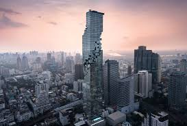
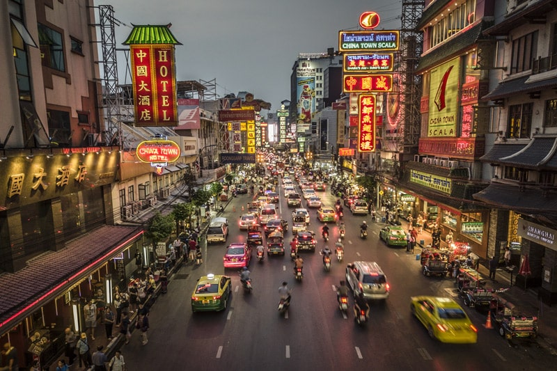
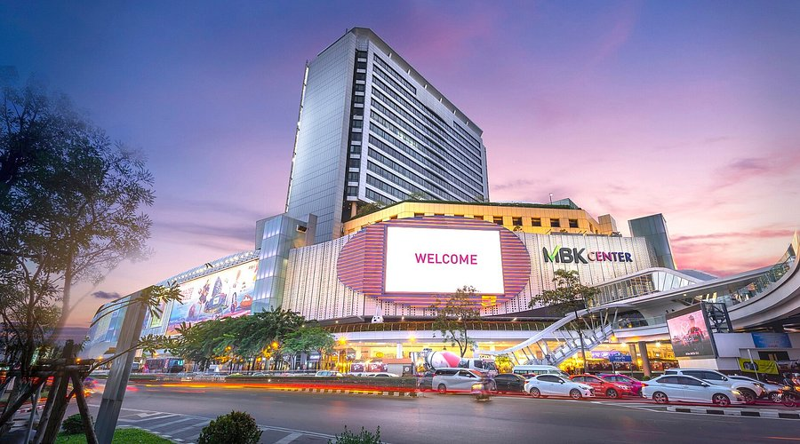
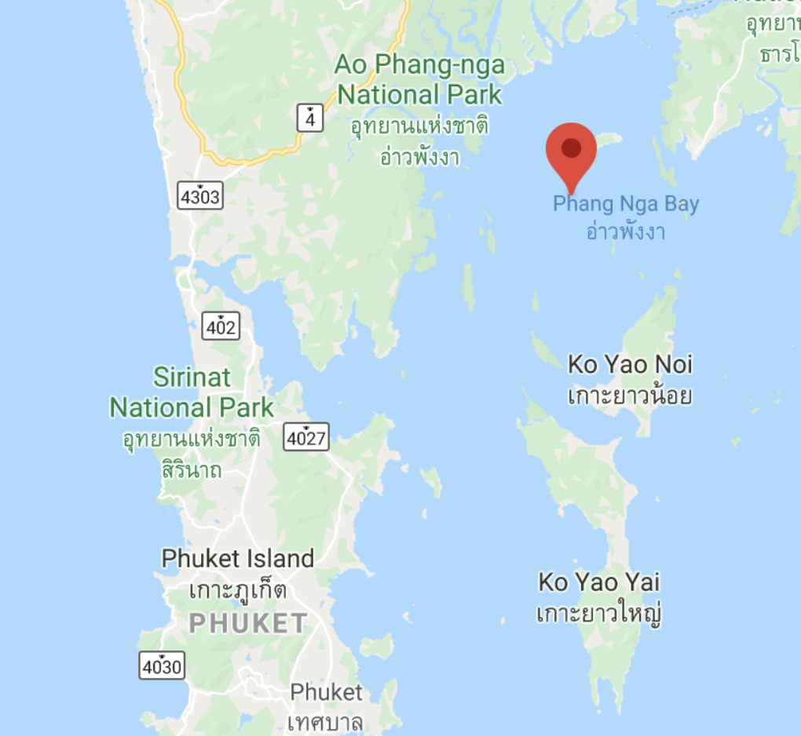
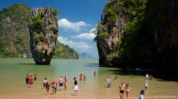
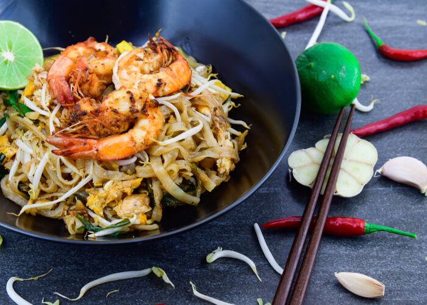

Viatge a Tailandia
Primer dia

El primer que vaig fer en arribar a Bangkok va ser anar a l'hotel més alt que hi ha a Bangkok el Baiyoke sky hotel, vaig deixar les maletes i vaig menjar alla ja que arribi just per l'hora del dinar i després em vaig posar a triar quin lloc volia anar primer. La veritat que els preus de Bangkok son molt asequibles, sobretot el menjar que pots arribar a menjar per 2 euros.

Al final vaig decidir anar al temple més famós i bonic de Bangkok que es diu Wat Arun, aquesta al costat d'un riu i el paisatge és impressionant, és un temple budista i té unes construccions impressionants, quan el vaig veure completament vaig agafar un vaixell perquè és una atracció que hi ha i es veu a la perfecció el temple. Un punt a destacar es que estava ple de gent.

Després de veure el temple vaig anar amb metro a veure el mercat de Chatuchak que només està obert els caps de setmana i és el mercat més gran de tot Tailàndia, allà hi havia també molta gent però valia la pena perquè hi havia moltes coses a més que sopi allà i el menjar estava molt bo encara que cal anar amb compte perquè solen estafar els turistes.
Segon dia
El segon dia el primer que vaig fer va ser anar a esmorzar a l'hotel i després vaig anar al mirador de MahaNakthon que és el segon edifici més alt de Bangkok, la seva estructura és molt moderna i bonica a més que es veu tot Bangkok encara que hi va haver un problema i és que no es veia molt bé ja que Bangkok està força contaminat. Vaig menjar alli i després vaig anar a veure els barris més importants de Bangkok.
Després a la tarda vaig anar al barri de chinatown de Bangkok el qual està inspirat en xina i la veritat que era molt bonic, allà vaig comprar unes quantes coses i després vaig anar a descansar una estona a l'hotel.
Per últim a la nit vaig anar al centre comercial més gran de Bangkok el Mbk center el qual tenia moltes botigues i vaig poder comprar moltes coses que em van agradar, a més que els preus eren molt més assequibles que a Espanya.
Tercer dia
L'últim dia em vaig aixecar molt d'hora i vaig anar amb vaixell a l'illa de Khao Phing Kan on té la platja més famosa de tot Tailàndia, l'únic problema és que està ple de turistes i que el clima és una mica imprevesible però és preciós.
Un cop a l'illa vaig pagar una atracció de busseig per poder veure tota la fauna marina de Tailàndia i em va agradar molt, a més que l'aigua d'aquesta platja és transparent i de color blau turquesa, està ple de tortugues i la gent és molt amable.
Per últim tasta els plats típics com l'Elpad thai el kha gai, ja que en aquesta zona hi ha molts llocs i aquesta esta molt bona, un cop fet això vaig tornar a agafar el vaixell per tornar a l'hotel i descansar ja que hi ha molt de camí caminant des del vaixell a la platja.
Plats típics
Elpad thai i el tom kha gai.Són plats molt típics i autèntics de la cuina tailandesa.